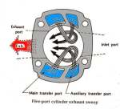
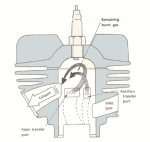
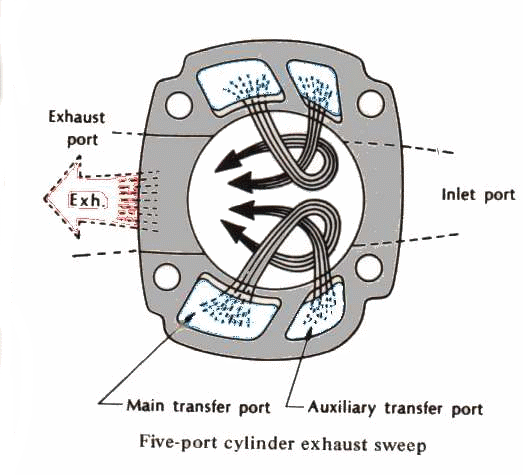
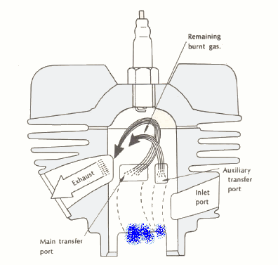

Your running along on your dirt Ring Ding and your not pushing it at all. Nice day, 1/2 throttle, grooven on the scenery, eat'n up the miles, head'n home, and then it happens. The bike locks up and you skid to a stop. Why ? ? ?
I've seen this a lot of times. The story varies a little but basically you were not pushing it, but you did have the throttle in one position for a long time. I've never heard anyone address this issue other than to say "Don't run your two stroke, for long distances on the street." I believe it really boils down to engine design. An engine is designed according to it's use. A two stroke lawnmower or outboard engine is designed to run at a steady speed. A two stroke motocross engine is designed to be run full throttle, part throttle, full throttle part throttle. On and off, on and off.
 


 Loop Scavenging Animation |
 Loop Scavenging Animation |
Two-Stroke Motocross engines are designed for on and off running. I think that getting on and off the throttle all the time tends to mix the cool incoming mixture with the hot exhaust gases. This cools the area over the exhaust port and keeps the piston from melting. Run the engine at a steady speed and the area over the exhaust port starts to get hotter and hotter until Boom, things melt. The problem is the steady running. If you run steady at half throttle it will take you longer to burn down than if you where going at three quarters throttle, but sooner of later it will happen. At least that's my theory as to why it happens. Probably, it does not make much difference these days. Two-Stroke engines are getting very rare indeed.
Bottom line? Don't run your Two-Stroke Dirt Bike at a steady speed. If you have to run on the street, keep working that throttle on and off.
 |
 |
Copyright © 1999-2015 dansmc.com. All rights reserved.